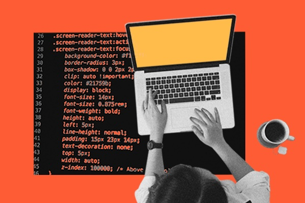
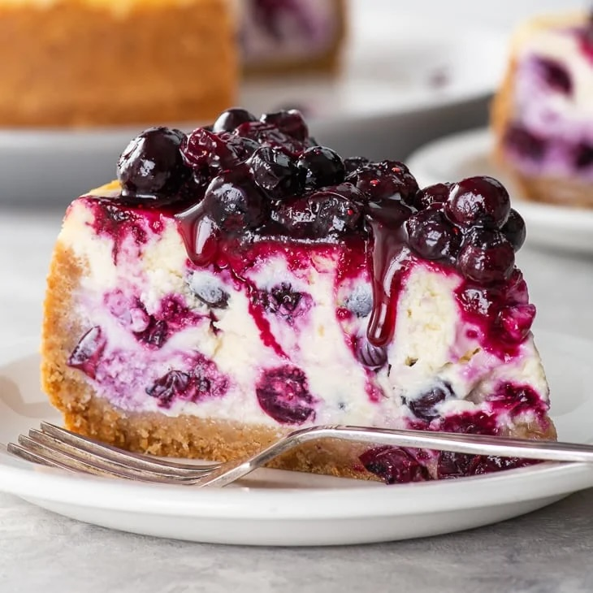
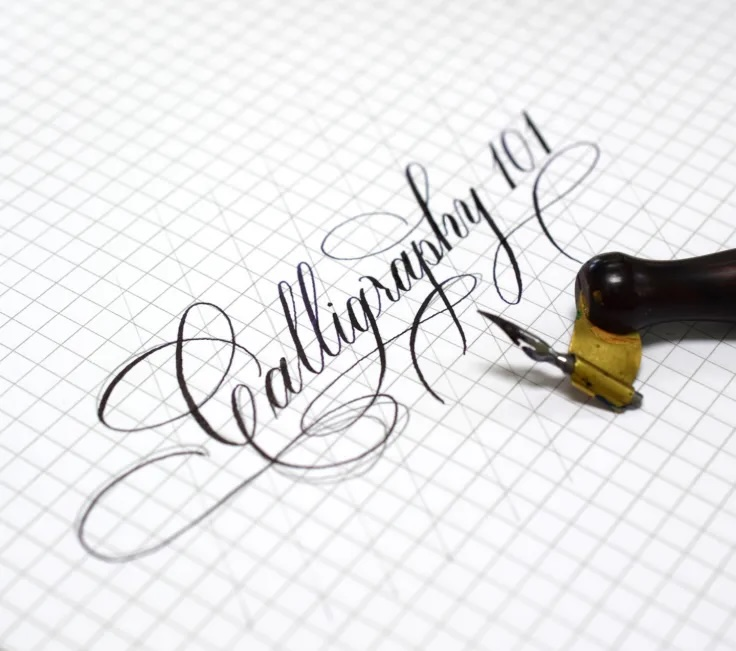

Who am I?
Biography
Hi! I’m Lenssa, a 21-year-old student soon turning 22 on October 15. I'd describe myself as a creative soul with a passion for details and design. I love working on projects that bring together creativity and technical problem-solving.
Academic Interests
I’m currently pursuing a degree in Information Systems (Informatics) at Lund University, and I'm close to finishing my studies. Over the course of my education, we've learned about various ways to assist companies in optimizing their business processes with the help of IT-systems. I also got introduced to some backend programming in Java and C#. But I've during my studies developed a strong interest in web development, particularly in UX design and frontend development. I enjoy learning about how to create intuitive interfaces. As I move forward in my studies, I’m seriously considering specializing in web development for my future career.
Hobbies
When I’m not studying or working on web projects, I have a few hobbies that keep me grounded. One of my favorite things to do, especially in the autumn as the weather gets cooler, is baking. Cheesecakes are my favourites. I’m also interested in learning more about calligraphy; That is something I used to do when I was younger that I want to get back into, I find the art of beautiful handwriting calming and inspiring.
 Future Goals
Career-wise, I aspire to possibly work in web development, for both web and mobile applications. Additionally, I would love to engage in a creative hobby project on the side. Outside of my career, I hope to travel more (as possibly most people). One of my long-term goals is to live abroad for a few years.